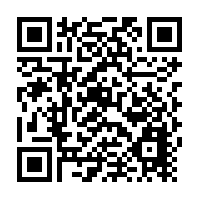

Have you ever had a strange or unpleasant experience with tracking and advertising online?
Data breaches, where customer information is stolen from companies, frequently make the news. It might seem like negligence on their part, but perfect security is impossible to achieve in reality - there is a small chance that any company could be the victim of a data breach, no matter how good their security practices are. This data that is stolen most often includes email addresses and credit card numbers, but might also include other information you gave the company, or even information about you that has been collected by your devices.
Hackers will often collect lists of email addresses, usernames, and passwords from data breaches and try these credentials on other sites. If you use the same password in several different places, then this makes it easy for them to take over multiple accounts as soon as one is compromised. If your email address is compromised, for example, then you might lose your way of recovering other accounts that you own (i.e. where the recovery process involves sending you an email).
Services like "haveibeenpwned" collate information on data breaches and let you check if any of your account details have been disclosed as part of a data breach. This is what we use to check the services accessed by your devices (see sidebar). If you sign up with your email address, then haveibeenpwned will let you know whenever it appears in a breach in the future, giving you valuable time to change your passwords.
HIBP Frequently Asked Questions | Haveibeenpwned
What is a "breach" and where has the data come from? A "breach" is an incident where data is inadvertently exposed in a vulnerable system, usually due to insufficient access controls or security weaknesses in the software. HIBP aggregates breaches and enables people to assess where their personal data has been exposed...
Have I Been Pwned? (HIBP, with "Pwned" pronounced like "poned") is a website that allows internet users to check if their personal data has been compromised by data breaches. The service collects and analyzes hundreds of database dumps and pastes containing information about billions of leaked accounts, and allows users to search for their own information by entering their username or email address.
Information for Individuals & families | National Cyber Security Centre
Top tips for staying secure online: here's a list of the most important things you can do to help get you started...
The National Cyber Security Centre (NCSC) is an organisation of the United Kingdom Government that provides advice and support for the public and private sector in how to avoid computer security threats. Based in London, it became operational in October 2016, and its parent organisation is GCHQ.
Do you think about online tracking and advertising any differently now?